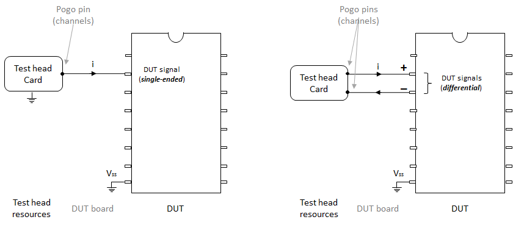
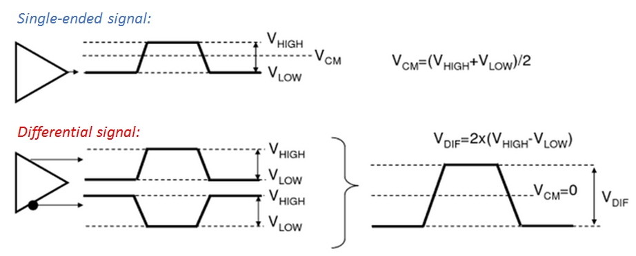

How to set up differential connections
Card channels can be connected to your DUT pins either in a single-ended or differential connection.
Single-ended versus differential connection
In single-ended connection, one of the card's channels is connected to your DUT pin. Whereas in a differential connection, two of the card's channels are connected to two DUT pins to form a differential pair. In which, one connection represents the positive polarity (positive pin) and the second one represents the negative polarity (negative pin) of the differential connection. The following figure shows an example for how single-ended and a differential-connection are formed:

Single-ended versus differential signaling
In a differential connection, differential signaling is used. In which, the electrical signal and its complement are sent, each on one connection of the differential pair. For instance, the electrical signal is sent on the channel that corresponds to the positive connection of the differential pair (positive pin). The inversion (complement) of this electrical signal is sent on the other channel which corresponds to the negative connection of the differential pair (negative pin). The following figure is an example that outlines the differences between single-ended and differential signaling:

The following table summarizes a quick comparison between single-ended and differential connections:
| Single-ended connection | Differential connections |
|---|---|
| Uses single pin (channel) with reference to ground | Uses two pins (channels) with the opposite signal on the each pin |
| Less pin count is used | Doubled pin count is used |
| More susceptible to noise and interference | More immune to noise and cross-talk (peak-to-peak voltage which is twice the peak voltage on each single channel) |
| single-ended signaling is limited in its ability to drive signals over long cable lengths and for higher data-rates | Differential-signaling is capable to drive signals over longer cable lengths and for higher data-rates |
Pin configuration for differential connections in SmarTest
SmarTest supports differential connections. For instance, digital cards such as Pin Scale 1600 contain drivers that can drive a differential signal into your DUT and differential-comparators to receive a differential signal from it.
There are typically native card channels that must be specifically used together to form a differential pair. The following table shows the native differential channels of the differential-comparators in the Pin Scale 800 card that must be used together to form each differential connection pair:|
Differential Pair |
|
|---|---|
|
+ Channel |
- Channel |
|
XXX01 |
XXX03 |
|
XXX02 |
XXX04 |
|
XXX05 |
XXX07 |
|
XXX06 |
XXX08 |
|
XXX09 |
XXX11 |
|
XXX10 |
XXX12 |
|
XXX13 |
XXX15 |
|
XXX14 |
XXX16 |
Level setup for differential connections in SmarTest
For card channels that are used to drive or receive differential signals, the level setup is
similar to that used for single-ended connection. You only have to define it for the positive
pins and assign the @diff annotation to it. For
example:myPositivePin@diff. SmarTest will automatically generate the level
setup for the pin connected to the negative channel of the differential pair.
- For differential-comparators, you can only use the native differential channel pairs of your card.
- Differential-comparators can be activated when you use termination modes such center_tap. For some cards, such as: Pin Scale 1600, you can also define a threshold. This allows you to directly measure the level of the received signals.
Timing setup for differential connections in SmarTest
For card channels that are used to drive or receive differential signals, the timing setup is
similar to that used for single-ended connection. You only have to define it for the positive
pins and assign the @diff annotation to each one of them. For example:
myPositivePin1@diff. SmarTest will automatically generate timing setup for the
negative pin of the differential pair.
Wavetable setup for differential connections in SmarTest
Pattern used for differential connections in SmarTest
In your pattern file, you must set up the patterns for your positive and negative pins such that the state characters for the positive pin is also used for the negative pin of your differential pair. SmarTest will automatically invert them for the negative pin as the wavetable is generated.
Examples
Pin configuration for a differential connection
Pin configuration for differential connections is similar to single-ended. The following is a simple example where pins used in differential connections, for instance: loop_i, loop_i-, loop_o, loop_o-, std_i, std_i-, std_o, and std_o- are defined:
hp93000,config,0.1 DFPN 30101,"",(loop_i) DFPN 30102,"",(loop_o) DFPN 30103,"",(loop_i-) DFPN 30104,"",(loop_o-) DFPN 30213,"",(std_i) DFPN 30214,"",(std_o) DFPN 30215,"",(std_i-) DFPN 30216,"",(std_o-) PSTE 1 CONF IO,F160,(loop_i,loop_o,loop_i-,loop_o-,std_i,std_o,std_i-,std_o-) DFPT (std_i,std_i-),(std_i_port) DFPT (std_o,std_o-),(std_o_port) DFPT (loop_i,loop_o,loop_i-,loop_o-),(loop_port) DFPT (loop_i,loop_i-),(prbs_i_port) DFPT (loop_o,loop_o-),(prbs_o_port) NOOP "7.0.1_79x1_fix_enhance_20100203_1236",,,
Level setup for a differential connection
This examples shows how the level setup for a differential connection is defined:
hp93000,level,0.1 DRLV 1,2250,2500,(loop_i,loop_o,loop_i-,loop_o-,std_i,std_o,std_i-,std_o-) RCLV 1,2250,,(loop_i,loop_o,loop_i-,loop_o-,std_i,std_o,std_i-,std_o-) TERM 1,OFF,,,,,,(loop_i,loop_o,loop_i-,loop_o-,std_i,std_o,std_i-,std_o-) CLMP 1,OFF,,,(loop_i,loop_o,loop_i-,loop_o-,std_i,std_o,std_i-,std_o-) LSUX 1 EQSP LEV,EQN,#9000001209EQNSET 1 "functional" SPECS VTerm [V] VTerm Vswing [V] VTerm +/- Swing Vth [V] Vth EQ1 [%] Equalization 1 EQ2 [%] Equalization 2 EQ3 [%] Equalization 3 LPF [ns] Low Pass Filter EQUATIONS LEVELSET 1 "terminated" PINS std_i@diff loop_i@diff term on vil = VTerm - Vswing vih = VTerm + Vswing v3h = VTerm vth = Vth eqi1 = EQ1 eqi2 = EQ2 eqi3 = EQ3 lpfi = LPF PINS std_o@diff loop_o@diff term center_tap vil = VTerm - Vswing vih = VTerm + Vswing v3h = VTerm vth = Vth eqo1 = EQ1 eqo2 = EQ2 eqo3 = EQ3 lpfo = LPF EQUATIONS LEVELSET 1 "terminated" PINS std_i@diff loop_i@diff term on vil = VTerm - Vswing vih = VTerm + Vswing v3h = VTerm vth = Vth eqi1 = EQi1 eqi2 = EQi2 eqi3 = EQi3 lpfi = LPFi PINS std_o@diff loop_o@diff term center_tap vil = VTerm - Vswing vih = VTerm + Vswing v3h = VTerm vth = Vth eqo1 = EQo1 eqo2 = EQo2 eqo3 = EQo3 lpfo = LPFo @ EQSP LEV,SPS,#9000004127 EQNSET 1 "functional" SPECSET 1 "800mV" # SPECNAME *****ACTUAL***** *****MINIMUM**** *****MAXIMUM**** UNITS COMMENT VTerm 0.8 [ V] Vswing 0.8 [ V] Vth 0 [ V] EQ1 0 [ %] EQ2 0 [ %] EQ3 0 [ %] LPF 0 [ ns] SPECSET 2 "800mV_2" # SPECNAME *****ACTUAL***** *****MINIMUM**** *****MAXIMUM**** UNITS COMMENT VTerm 0.8 [ V] Vswing 0.8 [ V] Vth 0.8 [ V] EQ1 0 [ %] EQ2 0 [ %] EQ3 0 [ %] LPF 0 [ ns]
Timing and wavetable setup for a differential connection
This example show how the timing and wavetable are setup for differential connections:
hp93000,timing,0.1
SPST TIM,,"spec_1",0
SPST TIM,,"loopX8",0
SPST TIM,,"loopX8_6G",0
SPST TIM,,"loopX8_7G",0
SPST TIM,,"loopX8_8G",0
PCLK 1,1,1000,(@)
CLKR 1,1000,10
BWDS 1,,,"",(loop_i,loop_o,loop_i-,loop_o-)
ETDS 1,1,,"",(loop_i,loop_o,loop_i-,loop_o-)
DCDT 1,""
TSUX 1,1
EQSP TIM,WVT,#9000028317# Demo Setup for Loop mode
WAVETBL "wvt_1"
PINS loop_i@diff
LOOP_I
BRK F10
PINS loop_o@diff
LOOP_O
BRK F1Z_IDLE
@
EQSP TIM,EQN,#9000001516
EQNSET 1 "eqn"
SPECS
per [ns]
EQUATIONS
TIMINGSET 1 "tim"
period = per
PINS loop_port
d1 = 0
d2 = per / 8
d3 = per / 8 * 2
d4 = per / 8 * 3
d5 = per / 8 * 4
d6 = per / 8 * 5
d7 = per / 8 * 6
d8 = per / 8 * 7
r1 = per / 16
r2 = per / 16 * 3
r3 = per / 16 * 5
r4 = per / 16 * 7
r5 = per / 16 * 9
r6 = per / 16 * 11
r7 = per / 16 * 13
r8 = per / 16 * 15
EQNSET 2 "loop x8"
SPECS
TBit [ps]
LO_offs [ps]
LI_offs [ps]
SO_offs [ps]
SI_offs [ps]
EQUATIONS
tperiod = 8 * TBit / 1000
loop_TXO_offset = LO_offs / 1000
loop_RXI_offset = LI_offs / 1000
TIMINGSET 1 "timing X8"
period = tperiod
PINS loop_port
period_div = 8
d1 = loop_RXI_offset
r1 = loop_TXO_offset
SPECIFICATION "spec_1"
{
CHECK all
# SPECNAME *****ACTUAL***** *****MINIMUM**** *****MAXIMUM**** UNITS COMMENT
per 985 [ ]
EQNSET 1 "eqn"
WAVETBL "wvt_1"
PORT loop_port
SYNC
{
}
Functional changes
- Introduced in SmarTest 7.4.3